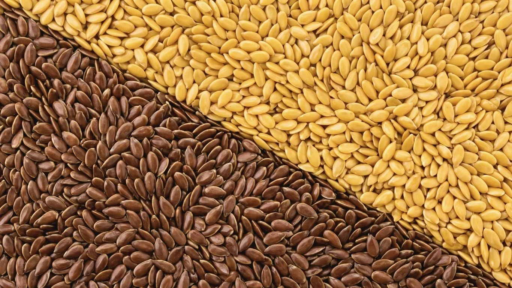

TL;DR — Key Points
- Both varieties deliver near-identical nutrition — the sourcing decision is driven by your end-product, not by nutritional profile.
- Yellow flaxseed: light bread, granola, retail health food — any visible-ingredient, consumer-facing application.
- Brown flaxseed: linseed oil extraction, meal milling, dark/wholegrain bread, animal feed — industrial and high-volume applications.
- Yellow flaxseed requires more active HCN management for consumer-facing products under EU Regulation (EU) 2023/915.
- Both varieties at Agros-98 AD: 38–42% oil, min 50% ALA, purity ≥ 99.95%, moisture ≤ 8%.
Both varieties come from the same plant — Linum usitatissimum — and deliver near-identical nutritional profiles. So why does the choice between yellow and brown flaxseed generate such consistent debate among procurement teams and food technologists? The answer is not about nutrition. It is about market fit — and selecting the wrong variety means either paying a price premium that delivers no commercial return, or producing a product whose visual outcome is incompatible with its category standard.

The Short Answer — It's About Application, Not Quality
Yellow and brown flaxseed are botanical variants of the same species, differentiated primarily by seed coat pigmentation. Their fatty acid composition, oil content, and protein density are near-equivalent across most commercial growing conditions.
At Agros-98 AD, both varieties are produced to the same core specification: 38–42% oil content, minimum 50% alpha-linolenic acid (ALA, Omega-3) as a percentage of fatty acids, moisture ≤ 8%, and purity ≥ 99.95%. Neither variety holds a meaningful nutritional advantage over the other at these specifications.
Colour is not a quality gradient. It is a market-fit signal. The sourcing decision is driven entirely by end-product requirements: whether the seed is visible in your formulation, what your downstream category demands visually, and where your product sits in the value chain. Answering those three questions determines which variety belongs in your production line.
When to Choose Yellow (Golden) Flaxseed
Yellow flaxseed — also referred to commercially as golden flaxseed — is the preferred variety for any application where the seed is visible to the end consumer and product aesthetics carry commercial weight.
The defining functional advantage in food manufacturing is crumb neutrality. Its pale, golden seed coat does not darken bread crumb. For artisan bakeries, white loaf producers, and premium bread brands, this is non-negotiable: even a small proportion of brown seed leaves visible dark speckling incompatible with light-crumb category standards. For whole-grain or multigrain products this distinction is irrelevant — for white sourdough, brioche, or premium white sandwich loaves, it is disqualifying.
The applications where golden flaxseed food manufacturing dominates:
- Light and white bread, artisan loaves, brioche — where crumb colour and seed visibility on the crust are commercial requirements
- Granola, muesli, and breakfast blends — the clean golden appearance is consistent with premium and organic retail positioning; brown seed in granola reads as lower grade to health-conscious consumers
- Plant-based and functional food formulations — where flaxseed is featured as an ingredient on-pack and its visual quality directly informs purchase decisions
- Retail and private-label health food products — golden appearance has established strong consumer recognition as a premium, clean-label seed
Yellow flaxseed commands a price premium over brown. That premium is commercially justified when it directly supports shelf positioning, product differentiation, or consumer expectation. It is not justified when the seed is invisible in the final product or processed beyond visual recognition. For full specifications and packaging options, see our yellow (golden) flaxseed product page.
When to Choose Brown Flaxseed
Brown flaxseed is the global industry standard for linseed oil extraction, and the dominant variety across high-volume food processing segments where seed coat appearance is secondary to extraction yield, cost, and supply reliability.
Its darker seed coat is not a liability. In whole-grain, rye, and multigrain bread categories, a brown seed coat is visually consistent with — and in some markets expected by — the end consumer. These categories have been built around brown flaxseed as a topping and inclusions ingredient for decades.
The primary industrial applications for brown flaxseed food industry processing:
- Cold-press and solvent linseed oil production — the global feedstock standard; processing volumes, established trade channels, and oil yield expectations are all calibrated to brown varieties, with ALA content typically running 52–58% of fatty acids
- Flaxseed meal and flour milling — seed coat colour is irrelevant once the seed is ground; buyers should focus on oil content and purity specification
- Whole-grain, rye, multigrain, and dark bread formulations — the visual profile of brown seed is category-appropriate or disappears entirely in the finished crumb
- Equine and companion animal nutrition — brown flaxseed has been the industry-standard variety in feed-grade applications for decades; supply chains are mature and pricing is stable
Brown flaxseed is more widely cultivated and more globally abundant than yellow. For most high-volume industrial buyers, this translates to a more predictable cost per tonne and more flexible sourcing options across production years. For volume specifications and pricing, see our bulk brown flaxseed product page.
Side-by-Side Comparison
| Factor | Yellow Flaxseed | Brown Flaxseed |
|---|---|---|
| Seed coat colour | Pale gold / cream | Dark brown |
| Typical price tier | Premium | Standard / industrial |
| Primary food applications | Retail, health food, light bread, granola, plant-based | Oil extraction, meal milling, dark bread |
| Bread applications | White, artisan, light sourdough, brioche | Whole-grain, rye, multigrain, dark bread |
| Oil extraction suitability | Suitable | Industry standard globally |
| Retail / consumer appeal | High — premium visual in visible-ingredient formats | Moderate — category-specific |
| HCN management complexity | Higher — active monitoring required for consumer products | Lower — typically within processing limits |
| Global availability | Moderate — specialist crop | High — wider global cultivation |
One Critical Technical Consideration — HCN
Flaxseed contains naturally occurring hydrocyanic acid (HCN) derived from its cyanogenic glycoside content. EU Regulation (EU) 2023/915, in force since 1 January 2023, sets legally binding maximum levels: ≤ 150 mg/kg for unprocessed linseed destined for the final consumer; ≤ 250 mg/kg for unprocessed linseed destined for further processing.
Yellow flaxseed varieties naturally tend to carry HCN levels in the 200–250 mg/kg range. This places them within the further-processing limit under normal conditions but requires deliberate varietal selection or documented post-harvest thermal treatment protocols to consistently meet the consumer-facing ≤ 150 mg/kg threshold. Buyers sourcing yellow flaxseed for direct-to-consumer product applications should require batch-level HCN CoA data — not a single-year average — before entering into a supply agreement.
Brown flaxseed typically presents lower HCN management complexity relative to the consumer limit, though compliance documentation remains mandatory for both varieties in any EU food chain application.
HCN compliance is one dimension of a broader quality framework. For a detailed breakdown of the technical and documentation parameters that separate food-grade from commodity-grade supply, read what separates good flaxseed from cheap flaxseed.
What to Ask Your Supplier Regardless of Variety
Whether you are sourcing yellow or brown flaxseed, require the following from any supplier as a baseline condition of evaluation:
Certificate of Analysis (CoA) per batch
Covering: moisture at loading, oil content, purity, foreign matter, admixture, and HCN level with the test method specified.
Pesticide residue report
Demonstrating compliance with EU MRLs under Regulation (EC) 396/2005 — multi-residue analysis, 400+ active substances, ISO 17025-accredited laboratory.
Certificate of Origin
Identifying country and specific region of production — required for traceability, import documentation, and labelling compliance.
FSSC 22000, BRC, or IFS certification
Or equivalent GFSI-recognised food safety management system. Non-negotiable for EU food chain entry.
Halal / Kosher certificates
If your customer base or export markets require religious compliance documentation.
EU Organic certificate (if applicable)
Confirm actual available volume before tendering — organic yields are significantly lower than conventional and supply is limited.
Any supplier unable to provide batch-level documentation on request, prior to contract, is not operating to food-grade procurement standards.
Agros-98 AD supplies both yellow and brown flaxseed from its own farmland in Bulgaria, with full documentation as standard — per-container CoA including HCN, pesticide residue testing, FSSC 22000, Halal, and Kosher certification, with EU Organic volumes available for eligible orders. Both varieties are available in 25 kg paper or PP bags, 50 lb bags, and 1,000 kg Big Bags, with a minimum order of one 40ft container. To discuss your specification requirements or request a quote, contact our sales team directly.
Sales & Export